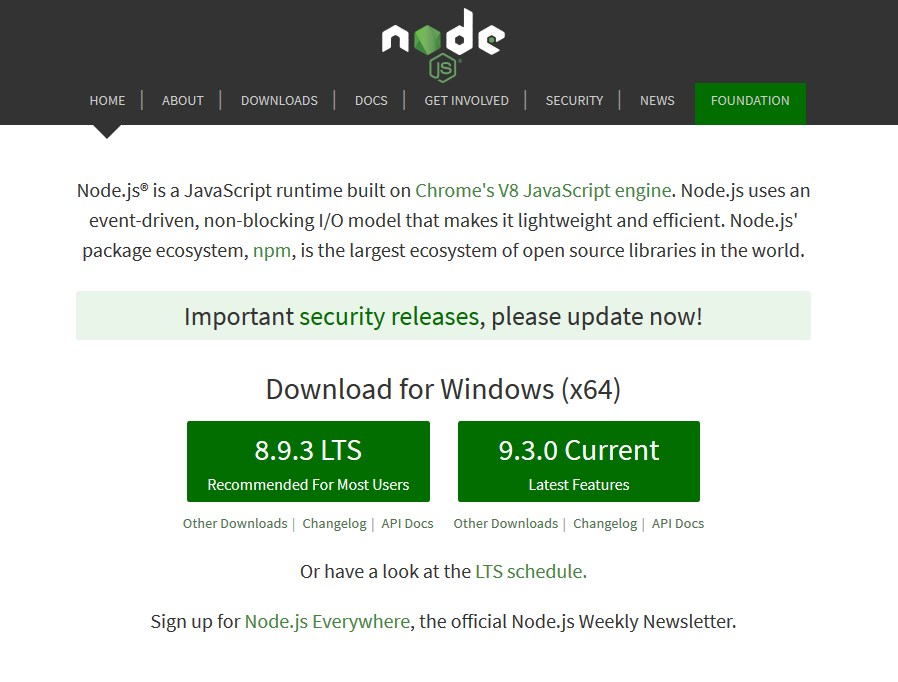
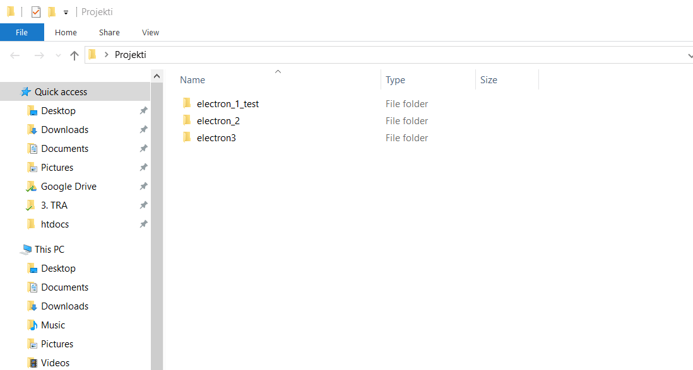
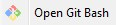
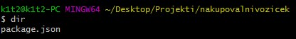
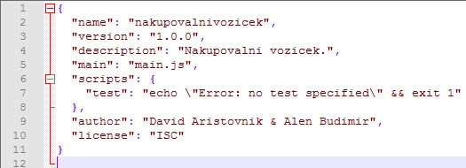
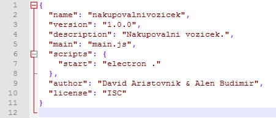

1. del - Vodič
Namestitev okolja
Prva stvar, ki jo bomo naredili je naložili in namestili potrebne datoteke za pravilno delovanje okolja Electron.
Prvo bomo namestili datoteko iz uradne spletne strani tukaj
Za tem bomo prenesli izvajalnik JavaScript NodeJS.


Nato bomo ustvarili mapo "nakupovalnivozicek" in v njej zagnali funkcijo  z desnim klikom miške, ko smo znotraj mape "nakupovalnivozicek".
V program bomo vpisali naslednje:
$ npm init
package name: (nakupovalnivozicek)Enter
version: (X.X.X)Enter
description: Nakupovalni vozicek.Enter
entry point: (index.js) main.jsEnter
test command:Enter
git repository:Enter
keywords:Enter
author: Tvoje ime in priimekEnter
licence: (ISC)Enter
Ta komanda bo v mapi "nakupovalnivozicek" ustvrila datoteko ".json" z imenom "package".
Odprite jo z željenim programom (npr.: Notepad, Notepad ++, VS Code...). Izgledati bi morala nekako tako:

Spremenimo linijo "scripts" kot kaže na sliki:
Nato vpišite naslednjo komando:
$ npm install --save electron
Izgledati bi moralo tako in lahko traja tudi do 15 minut (ne prekini procesa).

Nato lahko zapremo datoteko "package.json" in komandno okno.
In to je konec namestitve okolja electron.